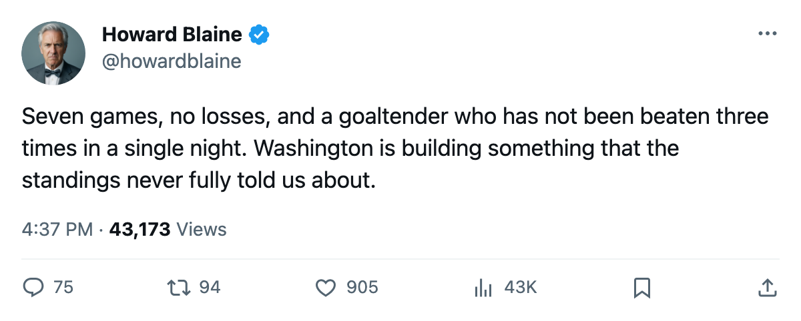
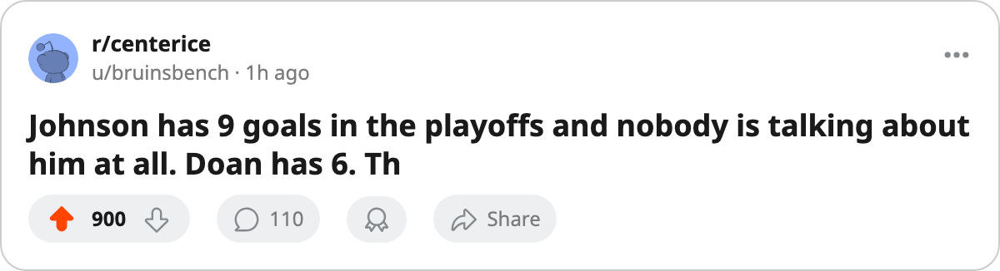

The Bracket, April 26: One club has not lost, and three series turn on a single game
Washington is 7-0 this spring and 3-0 up on Tampa Bay, while the other three second-round series sit one game apart heading into the weekend
 Howard BlaineSenior writer, The Blaine Rankings · The Hockey Gazette
Howard BlaineSenior writer, The Blaine Rankings · The Hockey GazetteWashington has not lost a postseason game. Seven meetings this spring, seven victories, and the third period of Game 3 in the  Washington Capitals-
Washington Capitals- Tampa Bay Lightning series produced a 4-2 result that pushed the Capitals' lead to 3-0 with Game 4 on Sunday at the MCI Center. Their goal differential across the two rounds is 24 for and 10 against. No other club in the bracket has a negative mark of any kind, and only two have scored fewer goals per game.
Tampa Bay Lightning series produced a 4-2 result that pushed the Capitals' lead to 3-0 with Game 4 on Sunday at the MCI Center. Their goal differential across the two rounds is 24 for and 10 against. No other club in the bracket has a negative mark of any kind, and only two have scored fewer goals per game.
The one that is running away
The Washington Capitals series is the only one in either conference where the leading club has yet to lose a game.  Jaromir Jagr84 [434] carries 2 goals and 9 assists through 7 games, and
Jaromir Jagr84 [434] carries 2 goals and 9 assists through 7 games, and  Olaf Kolzig83 [502] has a 1.32 goals-against average and a 5-0 record in net.
Olaf Kolzig83 [502] has a 1.32 goals-against average and a 5-0 record in net.  Pascal Dupuis73 [251] has 4 goals and 3 assists. Robert Lang [545] has 5 goals and 1 assist. The scoring is spread across four men who have each contributed at least 6 points.
Pascal Dupuis73 [251] has 4 goals and 3 assists. Robert Lang [545] has 5 goals and 1 assist. The scoring is spread across four men who have each contributed at least 6 points.
Tampa Bay has answers that have not yet been enough.  Cory Stillman85 [950] has 6 points in 8 games,
Cory Stillman85 [950] has 6 points in 8 games,  Martin St. Louis87 [942] has 6 in 8, and
Martin St. Louis87 [942] has 6 in 8, and  Nikolai Khabibulin92 [478] is 4-4 with a 2.28 goals-against average across the two series. The Lightning dropped both games in Washington this round and the one they took in regulation back home was Game 2 of Round 1 against Boston.
Nikolai Khabibulin92 [478] is 4-4 with a 2.28 goals-against average across the two series. The Lightning dropped both games in Washington this round and the one they took in regulation back home was Game 2 of Round 1 against Boston.
| Series | Score | Next game | Where |
|---|---|---|---|
(1)  Toronto Maple Leafs v (7) Toronto Maple Leafs v (7)  Pittsburgh Penguins Pittsburgh Penguins | TOR 2-1 | Apr 28 | PIT |
| (3) Tampa Bay Lightning v (4) Washington Capitals | WSH 3-0 | Apr 29 | WSH |
(2)  Dallas Stars v (8) Dallas Stars v (8)  Phoenix Coyotes Phoenix Coyotes | DAL 2-1 | Apr 28 | PHX |
(5)  Edmonton Oilers v (6) Edmonton Oilers v (6)  Mighty Ducks of Anaheim Mighty Ducks of Anaheim | EDM 2-1 | Apr 29 | ANA |
Dallas and the 48-point gap
The Presidents' Trophy club from last season is one win from its first conference-final berth since 2002, when it ran to the third round. Dallas took Game 3 in Phoenix 4-1 on Saturday behind  Jere Lehtinen84 [571], who carries 3 goals and 6 assists through 6 postseason games, the highest point total on the roster this spring.
Jere Lehtinen84 [571], who carries 3 goals and 6 assists through 6 postseason games, the highest point total on the roster this spring.  Mike Modano86 [669] has 6 points in 6 games.
Mike Modano86 [669] has 6 points in 6 games.  Marty Turco95 [1018] has won 5 of 6 decisions with a 1.43 goals-against average and a .919 save percentage.
Marty Turco95 [1018] has won 5 of 6 decisions with a 1.43 goals-against average and a .919 save percentage.
The gap between these clubs on the regular-season table is 16 points. Dallas won the season series 5-3. Phoenix answered Game 1 with a 3-1 win at the same rink two nights later, which is the one victory in this series that has not been decided by more than a single goal. Game 4 returns to Phoenix on Thursday.
 Mike Johnson75 [446] leads the Phoenix Coyotes scoring column with 9 goals and 3 assists in 9 postseason games.
Mike Johnson75 [446] leads the Phoenix Coyotes scoring column with 9 goals and 3 assists in 9 postseason games.  Shane Doan79 [231] has 6 goals and 1 assist.
Shane Doan79 [231] has 6 goals and 1 assist.  Sean Burke82 [128] has been the starter in all 8 wins and losses with a 2.21 goals-against average.
Sean Burke82 [128] has been the starter in all 8 wins and losses with a 2.21 goals-against average.
Pittsburgh holds the home ice but not the series
Pittsburgh Penguins won Game 1 at Toronto 3-1 on Tuesday. The last two games belong to Toronto Maple Leafs, including Saturday's 4-2 in Pittsburgh's own building. The Maple Leafs lead 2-1 with Game 4 back at the Mellon Arena on Thursday.
 Mario Lemieux85 [572] has 2 goals and 6 assists in 8 games for the Penguins. Eric Meloche75 [654], the Calder Trophy winner from last spring, carries 5 goals and 2 assists.
Mario Lemieux85 [572] has 2 goals and 6 assists in 8 games for the Penguins. Eric Meloche75 [654], the Calder Trophy winner from last spring, carries 5 goals and 2 assists.  Johan Hedberg86 [380] is 4-3 with a 2.00 goals-against average and a .911 save percentage. Toronto's
Johan Hedberg86 [380] is 4-3 with a 2.00 goals-against average and a .911 save percentage. Toronto's  Roberto Luongo95 [593] is 5-2 with a 1.73 goals-against average and a .953 save percentage.
Roberto Luongo95 [593] is 5-2 with a 1.73 goals-against average and a .953 save percentage.
The regular-season record between these clubs was 6-1-0 in Toronto's favor with a 28-16 goal differential. Pittsburgh has already stolen two games in this series that the arithmetic did not predict.
Edmonton takes the road
Edmonton Oilers leads Mighty Ducks of Anaheim 2-1 after winning Game 3 in Anaheim 4-2 on Friday.  Mike York76 [1100] has 4 goals and 8 assists in 8 games, the highest point total in this bracket.
Mike York76 [1100] has 4 goals and 8 assists in 8 games, the highest point total in this bracket.  Mike Comrie78 [170] has 2 goals and 9 assists.
Mike Comrie78 [170] has 2 goals and 9 assists.  Radek Dvorak79 [252] has 6 goals and 4 assists.
Radek Dvorak79 [252] has 6 goals and 4 assists.
Anaheim dropped two of three after taking Game 1 on the road 3-1.  Andy McDonald72 [642] leads the Ducks with 6 goals and 2 assists.
Andy McDonald72 [642] leads the Ducks with 6 goals and 2 assists.  Jean-Sebastien Giguere95 [317] is 4-3 with a 1.88 goals-against average, the lowest of any goaltender with more than 5 postseason games. Game 4 goes to Anaheim on Friday.
Jean-Sebastien Giguere95 [317] is 4-3 with a 1.88 goals-against average, the lowest of any goaltender with more than 5 postseason games. Game 4 goes to Anaheim on Friday.
The season series between these two ended 4-2-1 to Edmonton, with 5 of 8 meetings decided by a single goal. This round has followed the same pattern through three games.

